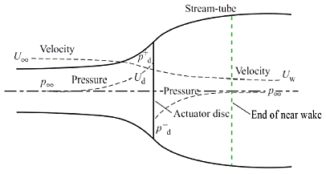
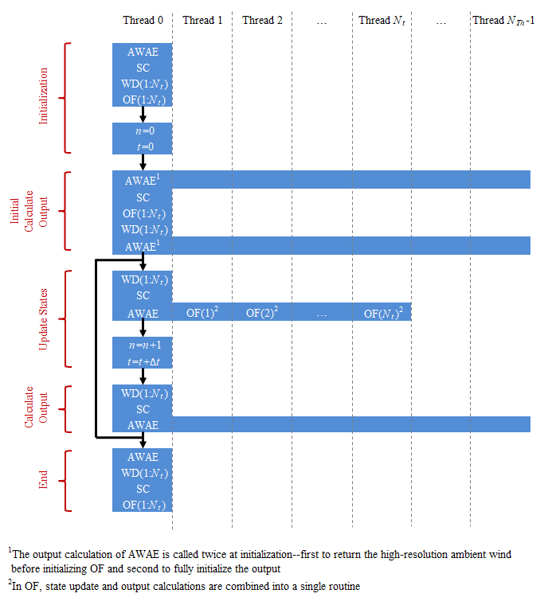
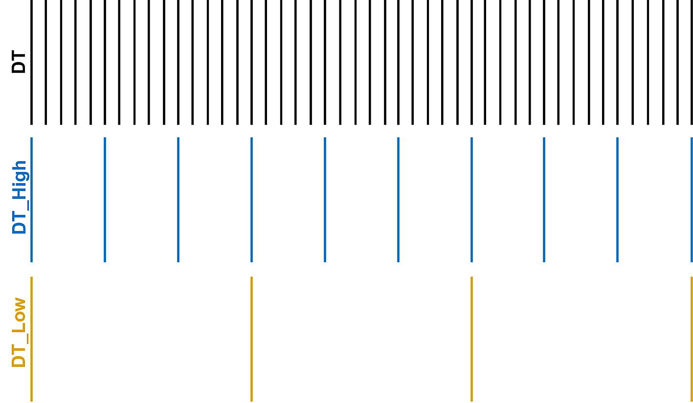
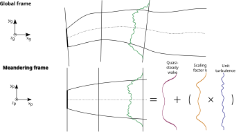
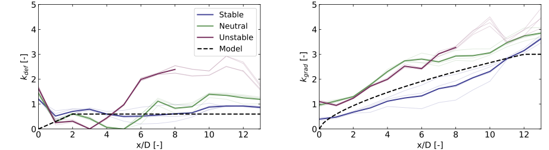
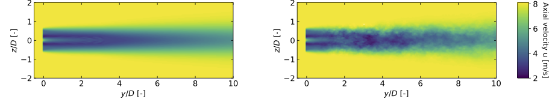

4.19.7. FAST.농장 이론
FAST.Farm은 풍력 발전소 내 풍력 터빈의 성능과 부하를 예측하기 위한 다중물리 엔지니어링 도구입니다. FAST.Farm 사용 OpenFAST 각 개별 터빈의 에어로-하이드로-서보-탄성 역학을 해결하지만 대기 경계층의 풍력 발전 단지 전체 주변 바람에 대한 추가 물리학을 고려합니다. 그리고 적자, 이류, 편향, 사행 및 병합을 깨울 수 있습니다. FAST.Farm은 후류 구불구불한 수동 추적 모델링을 포함하여 DWM 모델의 원리를 기반으로 하지만 이전 DWM 구현의 많은 제한 사항을 해결합니다.
4.19.7.1. 동적 웨이크 미앤더링 원리 및 제한 사항 해결
DWM 모델의 기본 아이디어는 후류 부족 진화(성능에 중요)와 후류 사행 및 후류 추가 난류(부하에 중요함)를 포함하여 풍력 발전 성능 및 풍력 터빈 부하의 정확한 예측과 관련된 주요 후류 특징을 포착하는 것입니다. 섹션 4.19.7.2.3.4). 기본 물리 법칙이 적용되지만 계산 비용을 최소화하기 위해 적절한 단순화가 이루어졌으며 HFM 솔루션을 사용하여 하위 모델을 알리고 보정합니다. DWM 모델에서 후류 흐름 과정은 작은 난류 와류(직경 2개 미만)가 후류 부족 진화에 영향을 미치고 큰 난류 와류(직경 2개 이상)가 후류 구불구불한 현상에 영향을 미치는 "스케일 분할"을 통해 처리됩니다.
풍력 터빈 로터의 추력이 있으면 풍속이 감소하고 로터의 바람 바로 반대쪽에서 압력이 증가합니다. 로터의 바람 바로 아래에 있는 후류 영역에서 - 그림에 나와 있습니다. 그림 4.66 – 응집성 와류가 파괴되고, 압력이 자유 흐름으로 회복되고, 풍속이 더 감소하고, 후류가 반경 방향으로 확장됩니다. 바람이 더 불어오는 먼 후류 지역에서 후류 부족은 대략 가우시안 수준이고 후류 전단층을 가로질러 주변 바람으로부터 후류로의 운동량의 난류 전달로 인해 자유 흐름으로 회복됩니다. 이러한 유속 감소와 자유 흐름으로의 점진적인 회복을 후류 부족 진화라고 합니다. 대부분의 DWM 구현에서 후류 부족 진화는 축 대칭 좌표의 준 정상 상태 조건에서 레이놀즈 평균 Navier-Stokes 방정식의 얇은 전단층 근사를 통해 모델링됩니다. 그림 4.58. 난류 폐쇄는 작은 난류 소용돌이에 의존하는 와점도 공식을 사용하여 포착됩니다. 이 항적 부족 진화 솔루션은 먼 항적에서만 유효합니다. 풍력 터빈은 일반적으로 밀접하게 간격을 두고 있지 않기 때문에 이 먼 후류는 풍력 발전 단지 분석에 가장 중요합니다. 그러나 후류 부족 진화 솔루션은 로터에서 시작되기 때문에 원거리 솔루션의 정확도를 향상시키기 위해 입구 경계 조건에 근접 후류 수정이 적용됩니다.


그림 4.66 거의 깨어난 지역.
후류 구불구불한 것은 큰 난류 소용돌이에 의해 운반되는 후류 부족의 대규모 움직임입니다. 이 항적 구불구불한 과정은 DWM([ff-Leal08]) 후류 부족을 가로 방향(수평 및 수직)으로 이동 기준 프레임(MFoR)으로 전달하는 수동 추적자로 구불구불한 곡선을 모델링합니다. 그림 4.55 – 후류 평면 전체에 걸쳐 공간적으로 평균화된 주변 바람(큰 난류 소용돌이 포함)을 기반으로 합니다.
후류 추가 난류는 후류의 난류 혼합으로 인해 생성된 추가 소규모 난류입니다. 이는 종종 배경(교란되지 않은) 난류를 확대하여 DWM에서 모델링됩니다(참조: 섹션 4.19.7.2.3.4).
DWM의 여러 변형이 예를 들어 덴마크 공과 대학([ff-Meal10, ff-Meal16]) 및 매사추세츠 대학교([ff-Ceal15, ff-Hao16, ff-Heal14]). 기존 DWM 구현의 정확한 제한 사항은 구현에 따라 다르지만 FAST.Farm 개발 시 해결되는 구체적인 제한 사항은 다음과 같습니다. 표 4.15 적절한 경우 다음 섹션에서 논의됩니다.
한정 |
솔루션/혁신 |
|---|---|
|
|
|
|
|
|
|
|
|
|
|
|
4.19.7.2. FAST.농장 이론 기초
FAST.Farm은 각각 풍력 발전소의 서로 다른 물리 영역을 나타내는 여러 하위 모델로 구성된 비선형 시간 영역 다중 물리학 엔지니어링 도구입니다. FAST.Farm은 FAST 모듈화 프레임워크의 프로그래밍 요구 사항을 따르는 오픈 소스 소프트웨어로 구현됩니다([ff-Jon13]), 하위 모델은 드라이버 코드를 통해 상호 연결된 모듈로 구현됩니다. FAST.Farm의 하위 모델 계층 구조는 다음과 같습니다. 그림 4.56. 항적 대류, 편향 및 사행; 깨어날 때 교정; 및 후류 부족 증가는 후류 역학의 하위 모델입니다(WD) 모델은 단일 모듈로 구현됩니다. 주변 바람과 후류 병합은 주변 바람과 배열 효과의 하위 모델입니다(AWAE) 모델은 단일 모듈로 구현됩니다. OpenFAST(OF) 모듈, FAST.Farm에는 3개의 모듈과 1개의 드라이버가 있습니다. 여러 가지 사례가 있습니다. OF 및 WD 모듈 – 각 풍력 터빈/로터당 하나의 인스턴스입니다. 각 하위 모델/모듈은 아래 하위 섹션에 설명되어 있습니다.
FAST.Farm은 직렬 또는 병렬 모드로 컴파일하고 실행할 수 있습니다. FAST.Farm에서 OpenMP까지 병렬화가 구현되었습니다. 이를 통해 FAST.Farm은 노드 내의 코어/스레드 간에(노드 간이 아님) 계산 작업을 나누어 단일 시뮬레이션 속도를 높이는 방식으로 멀티코어 컴퓨터를 활용할 수 있습니다. 이 프로세스는 다음에서 설명됩니다. 그림 4.67 스레드 수가 다음인 노드의 경우(\(N_{Th}\))는 풍력 터빈의 수(\(N_t\)). 의 사례가 하나 있습니다. AWAE 모듈과 \(N_t\) 의 사례 OF 및 WD 모듈. 초기화, 업데이트 상태, 출력 계산 및 각 모듈에 대한 호출 종료가 표시됩니다. 출력 계산 AWAE 모든 스레드에서 병렬화됩니다. 시간 행진 동안 각 인스턴스는 OF 주변 바람 데이터를 읽는 동안 병렬로 해결됩니다. AWAE.


그림 4.67 FAST.Farm 병렬화 프로세스.
풍력 발전 단지의 규모와 풍력 터빈의 수는 사용 가능한 RAM에 의해서만 제한됩니다. 병렬 모드에서는 OpenFAST 하위 모델의 각 인스턴스가 별도의 스레드에서 병렬로 실행될 수 있습니다. 동시에 주변의 바람도 AWAE 모듈이 다른 스레드의 메모리로 읽어지고 있습니다. 따라서 가장 빠른 시뮬레이션에는 풍력 발전소의 풍력 터빈 수보다 적어도 하나 이상의 코어가 필요합니다. 또한, AWAE 모듈은 별도의 스레드로 병렬화됩니다. 대규모 풍력 발전 단지의 모델링을 지원하려면 메모리 병렬화 및 다중 노드 HPC부터 MPI까지의 노드 간 병렬화를 포함하는 단일 시뮬레이션이 필요할 수 있습니다. MPI는 아직 FAST.Farm 내에서 구현되지 않았습니다. 그러나 다중 노드 HPC를 사용하면 별도의 노드에서 여러 직렬 또는 병렬 시뮬레이션을 병렬(배치 모드)로 실행할 수 있습니다. 직렬 모드에서는 여러 직렬 시뮬레이션을 별도의 코어 및/또는 노드에서 병렬(배치 모드)로 실행할 수 있습니다.
4.19.7.2.1. FAST.Farm 드라이버
"글루 코드"라고도 알려진 FAST.Farm 드라이버는 개별 모듈을 함께 결합하고 전체 시간 영역 솔루션을 발전시키는 코드입니다. 또한 FAST.Farm 드라이버는 시뮬레이션 매개변수의 입력 파일을 읽고, 이러한 매개변수의 유효성을 확인하고, 모듈을 초기화하고, 결과를 파일에 쓰고, 시뮬레이션이 끝나면 메모리를 해제합니다.
FAST.Farm 드라이버의 결합 알고리즘을 단순화하고 계산 효율성을 보장하기 위해 모든 모듈 상태(\(x^d\)), 입력(\(u^d\)), 출력(\(y^d\)) 및 기능(\(X^d\) 상태 업데이트 및 \(Y^d\) 출력의 경우) FAST.Farm은 이산 시간으로 표현됩니다. \(t=n\Delta t\), 어디 \(t\) 시간이다, \(n\) 이산 시간 단계 카운터이고, \(\Delta t\) 사용자가 지정한 이산 시간 단계(증분)입니다. 따라서 FAST.Farm의 가장 일반적인 모듈 형태는 FAST 모듈화 프레임워크에서 허용하는 것보다 더 간단합니다([ff-Jon13]), 수학적으로 다음과 같이 표현됩니다. 1
해당 OF, 및 WD 모듈에는 입력에서 출력으로의 직접적인 피드스루가 없습니다. 즉, 해당 출력 기능이 다음과 같이 단순화됩니다. \(y^d\left[ n \right]=Y^d\left( x^d\left[ n \right],n \right)\). 의 능력 OF 위 형식으로 작성할 모듈에 대한 설명은 섹션 4.19.7.2.2. 추가적으로, AWAE 모듈에는 상태가 없으므로 모듈을 피드포워드 전용 시스템으로 줄이고 다음을 단순화하는 모듈 형태로 만듭니다. \(y^d\left[ n \right]=Y^d\left( u^d\left[ n \right],n \right)\). 본 설명서에 포함된 기능의 경우 대괄호 \(\left[\quad\right]\) 이산 함수와 둥근 괄호를 나타냅니다. \(\left(\quad\right)\) 연속 함수를 나타냅니다. 대괄호/괄호는 묵시적으로 삭제됩니다. 각 FAST.Farm 모듈의 상태, 입력 및 출력(OF, WD, 및 AWAE)에 나열되어 있습니다. 표 4.16 아래 섹션에서 자세히 설명합니다.
기준 치수 |
상태(이산 시간) |
입력 |
출력 |
|---|---|---|---|
OpenFAST (OF) |
|
|
|
웨이크 다이내믹스(WD) |
을 위한 \(0 \le n_p \le N_p-1\):
|
|
을 위한 \(0 \le n_p \le N_p-1\):
|
주변 바람 및 배열 효과(AWAE) |
|
각 터빈에 대해 \(0 \le n_p \le N_p-1\):
|
각 터빈에 대해:
|
초기화 후 각 시간 단계 내에서 각 모듈의 상태(OF, 및 WD)이 업데이트됩니다(시간부터 \(t\) 시간에 \(t+\Delta t\)또는 동등하게, \(n\) 까지 \(n+1\)); 시간이 증가합니다. 모듈 출력은 계산되어 다른 모듈에 대한 입력으로 전송됩니다. 양식 단순화로 인해 각 모듈의 상태 업데이트를 병렬로 해결할 수 있습니다. 출력에서 입력으로의 전송에는 큰 비선형 해석이 필요하지 않습니다. 솔루션의 전체 수정 단계가 필요하지 않습니다. 수정 단계가 없다는 점은 OpenFAST([ff-Seal14, ff-Seal15]). 또한, 출력 계산은 OF, 및 WD 모듈을 병렬화한 다음 출력 계산을 수행할 수 있습니다. AWAE 기준 치수. 2 병렬 모드에서는 FAST.Farm부터 OpenMP까지 병렬화가 구현되었습니다.
작은 시간 척도와 정교한 물리학으로 인해 OpenFAST 하위 모델은 FAST.Farm 모듈 중 계산 속도가 가장 느립니다. 추가적으로, 출력 계산은 AWAE 모듈은 OpenFAST와 병렬로 풀 수 없는 유일한 주요 계산입니다. 이로 인해 가장 빠른 병렬화된 FAST.Farm 솔루션은 독립형 OpenFAST 시뮬레이션보다 약간 더 느리게 실행될 수 있습니다. 그 결과 풍력 터빈/농장 설계 및 분석에 필요한 많은 시뮬레이션을 실행할 수 있을 만큼 계산 비용이 적게 드는 시뮬레이션이 가능해졌습니다.
4.19.7.2.2. OpenFAST(OF 모듈)
FAST.Farm은 다음을 사용합니다. OpenFAST 풍력 발전소에 있는 개별 터빈의 역학(부하 및 동작)을 모델링합니다. OpenFAST는 환경 자극(해양 시스템의 경우 바람 유입, 파도, 해류 및 얼음)과 전체 시스템(로터, 드라이브트레인, 나셀, 타워, 컨트롤러, 해양 시스템의 경우 하부 구조 및 스테이션 유지 시스템)의 결합 시스템 응답을 캡처합니다. OpenFAST 자체는 결합된 에어로-하이드로-서보-탄성 솔루션의 서로 다른 물리적 영역에 각각 해당하는 다양한 모듈의 상호 연결입니다. OpenFAST 솔루션의 세부 사항은 이 문서의 범위를 벗어나지만 위의 하이퍼링크 및 관련 참조에서 찾을 수 있습니다.
해당 OF FAST.Farm 모듈은 OpenFAST를 FAST.Farm에 연결하는 래퍼입니다. 이는 SOWFA에서 사용할 수 있는 OpenFAST 래퍼와 유사하지만 입력 및 출력이 다릅니다(아래 설명). 이 래퍼는 OpenFAST 상태 업데이트의 하위 순환도 제어합니다. OpenFAST 내에서 해결된 시간 척도는 FAST.Farm 내에서 해결된 시간 척도보다 훨씬 작습니다. 따라서 정확성과 수치적 안정성을 위해 OpenFAST 시간 단계는 일반적으로 그림에 표시된 대로 FAST.Farm에 필요한 단계보다 훨씬 작습니다. 그림 4.68.


그림 4.68 OpenFAST(DT), FAST.Farm 고해상도 도메인(DT_High) 및 FAST.Farm 저해상도 도메인(DT_Low)의 시간 범위를 보여줍니다.
의 사례가 하나 있습니다. OF 각 풍력 터빈에 대한 모듈. 병렬 모드에서 이러한 인스턴스는 OpenMP를 통해 병렬화됩니다. OpenFAST 자체에는 연속 시간, 이산 시간, 대수 및 기타(예: 논리) 상태를 포함하여 다양한 입력, 출력, 상태 및 매개변수를 갖는 다양한 모듈이 있습니다. 그러나 OpenFAST를 FAST.Farm에 연결하기 위해 OF 모듈은 입력에서 출력으로의 직접적인 피드스루 없이 이산 시간에 작동합니다. 이는 다음을 호출하여 달성됩니다. OF FAST.Farm 시간 단계에 의해 지정된 속도로 모듈을 \(\Delta t\), 그리고 일회성 단계(\(\Delta t\)) 입력에 대한 출력의 지연; 이 일회성 지연은 FAST.Farm 내에서 해결되는 느린 시간 척도 때문에 문제가 될 것으로 예상되지 않습니다.
초기화 시 풍력 터빈의 수(\(N_t\), 와 함께 \(n_t\) 터빈 카운터는 다음과 같습니다. \(1\le n_t\le N_t\)), 해당 OpenFAST 기본 입력 파일 및 전역의 터빈 원점 X-Y-Z 관성계 좌표계는 사용자가 지정합니다. 터빈 기원은 편향되지 않은 타워 중심선과 지면 또는 해양 시스템의 경우 평균 해수면의 교차점으로 정의됩니다. 전역 관성계 좌표계는 다음과 같이 정의됩니다. Z 수직으로 위쪽을 향함(중력 반대), X 수평 방향으로 명목상 풍하 방향(0도 풍향을 따라), 및 Y 가로 방향으로 향하게 됩니다.
해당 OF 모듈은 또한 터빈 주변의 고해상도 풍력 영역(시간과 공간 모두에서)을 가로지르는 교란된 바람(주변 터빈의 후류와 주변 터빈의 후류)을 사용합니다. AWAE 모듈 – 참조 섹션 4.19.7.2.4 자세한 내용은), \(\vec{V}_\text{Dist}^\text{High}\)를 입력으로 사용하여 OpenFAST에 의해 계산된 개별 터빈 부하 및 응답이 후류 및 배열 효과를 포함하여 풍력 발전 단지를 통과하는 흐름에 의해 정확하게 구동되도록 합니다. 공간적으로 고해상도 풍력 영역은 로터의 요잉, 블레이드 편향 및 지지 구조물의 움직임을 포괄할 만큼 충분히 커야 합니다(후자는 부유형 해상 풍력 터빈에 특히 중요합니다). OpenFAST는 4차원(3개의 공간 차원과 1개의 시간 차원) 보간법을 사용하여 분석 노드에 대한 지역적 바람을 결정합니다.
해당 OF 모듈은 웨이크 역학을 계산하는 데 필요한 여러 출력을 계산합니다(입력 WD 기준 치수). 여기에는 다음이 포함됩니다.
\(\hat{x}^\text{Disk}\) – 로터 중심선의 방향
\(\vec{p}^\text{Hub}\) – 로터 중심의 전역 위치
\(D^\text{Rotor}\) – 로터 직경
\(\gamma^\text{YawErr}\) – 로터의 나셀 요 오류
\(^\text{DiskAvg}V_x^\text{Rel}\) – 디스크에 수직인 로터-디스크 평균 상대 풍속(주위 + 이웃 터빈의 후류 + 터빈 운동)
\(^\text{AzimAvg}C_t\left( r \right)\) – 방사상으로 분포된 방위각 평균 추력 계수(회전자 디스크에 수직), 여기서 \(r\) 반경입니다.
본 설명서에서는 위쪽 화살표(\(\vec{\quad}\))는 3성분 벡터를 나타내고 모자(\(\hat{\quad}\))는 3성분 단위 벡터를 나타냅니다. 이 설명서의 명확성을 위해 \(\left( r \right)\) 방사형 의존성이 FAST.Farm 내의 개별 방사형 유한차분 그리드에 저장/계산되더라도 방사형 의존성을 연속 함수로 표시하는 데 사용됩니다. 제외 \(\gamma^\text{YawErr}\) 및 \(^\text{AzimAvg}C_t\left( r \right)\), 나열된 모든 변수는 FAST.Farm 개발 전에 OpenFAST 내에서 계산되었습니다. \(\gamma^\text{YawErr}\) 전역에 대한 각도로 정의됩니다. Z 로터 중심선에서 로터 디스크 평균 상대 풍속(주변 + 이웃 터빈의 후류 + 터빈 운동)까지, 둘 다 수평 전역에 투영됩니다. X-Y 비행기 - 봐 그림 4.57 예를 들어. \(^\text{AzimAvg}C_t\left( r \right)\) 방정식으로 계산됩니다. (4.228)
어디:
\(N_b\) – 로터 블레이드 수 \(n_b\) 블레이드 번호로 사용하며, 이때 \(1\le n_b\le N_b\)
\(\left\{ \quad \right\}^T\) – 벡터 전치
\(\rho\) – 공기 밀도
\(\vec{f}_{n_b}\left( r \right)\) – 공기 역학적 적용 하중 3 블레이드용 로터 디스크 평면에서 반경 방향 바깥쪽으로 연장되는 선을 따라 단위 길이당 분포 \(n_b\).
방정식의 분자 (4.228) 는 로터 디스크에 수직으로 투영된 단위 길이당 분포된 공기 역학적 적용 하중, 즉 반경 방향 종속 추력입니다. 분모는 주어진 반경의 원주로 구성된 반경 방향 종속 추력 계수에 대한 정규화 계수입니다. \(2\pi r\), 그리고 로터 디스크 평균 상대 풍속의 동적 압력, \(\frac{1}{2}\rho {{\left( ^\text{DiskAvg}V_x^\text{Rel} \right)}^2}\).
4.19.7.2.3. 웨이크 다이내믹스(WD 모듈)
해당 WD FAST.Farm 모듈은 후류 이류, 편향 및 사행을 포함하여 개별 로터에 대한 후류 역학을 계산합니다. 깨어나기 직전 교정; 그리고 각성 부족 증가. Near-Wake 보정은 Wake 적자의 Near-Wake(압력 구배 영역) 확장을 처리합니다. 후류 부족 증가는 준정상 상태 축대칭 후류 부족을 명목상 바람 방향으로 이동시킵니다. 각 하위 모델은 아래 하위 섹션에 설명되어 있습니다. 의 사례가 하나 있습니다. WD 각 로터에 대한 모듈.
후류 역학 계산에는 실험 데이터 또는 HFM와 더 잘 일치하도록 보정할 수 있는 터빈 작동이나 대기 조건에 따라 달라질 수 있는 많은 사용자 지정 매개변수가 포함됩니다. SOWFA (또는 이와 동등한 것)을 벤치마크로 사용합니다. 기본값은 다음을 기반으로 교정된 각 매개변수에 대해 파생되었습니다. SOWFA 시뮬레이션([ff-Deal18]), 그러나 FAST.Farm 사용자가 이를 덮어쓸 수 있습니다.
후류 부족 진화는 고정된 수의 후류 평면으로 구성된 축 대칭 유한 차분 그리드에서 이산 시간에 해결됩니다. \(N_p\) (와 함께 \(n_p\) 항적 비행기 카운터는 다음과 같습니다 \(0\le n_p\le N_p-1\)). 후류 평면은 후류 부족이 계산되는 후류의 단면으로 생각될 수 있습니다.
후류면의 진화를 위해 세 가지 후류 공식이 이용 가능하다. 매개변수 Mod_Wake 후류 공식 간을 전환하는 데 사용됩니다. 다음 세 가지 옵션을 사용할 수 있습니다.
1) 극지 [Mod_Wake=1] (기본). 후류는 축대칭이며 극격자 격자에 정의되어 있으며 암묵적 크랭크-니콜슨 방식을 사용하여 해석되었으며 전단층 근사법에서 운동량 보존 법칙과 질량 보존 법칙을 모두 만족합니다. 각 평면에는 고정된 방사형 노드 그리드가 있습니다. 후류 부족은 축대칭으로 가정되기 때문에 방사형 유한차분 그리드는 평면으로 간주될 수 있습니다.
2) 컬링-웨이크 모델 [Mod_Wake=2]. 후류는 데카르트 그리드에서 정의되고, 기울어진 유입에서 컬링된 후류 와류의 효과는 직교류 속도를 도입하여 설명되며, 운동량 보존은 1차 순방향 오일러 방식을 사용하여 해결되고, 질량 보존은 강제되지 않으며, 후류 소용돌이의 효과가 설명될 수 있습니다. 각 평면에는 (구불구불한 프레임의) y 및 z 방향으로 고정된 수의 노드가 있습니다. 후류는 기울어진 유입에서 "말린" 모양을 채택합니다.
3) 데카르트 [Mod_Wake=3] 이는 축 대칭 후류로 이어지는 강도가 0인 컬링 후류 와류를 갖는 모델 2에 해당합니다. 이 공식에는 소용돌이 효과가 포함될 수 있습니다.
Curl 및 데카르트 구현은 1차 순방향 구조에 의존하기 때문에 구현은 Polar 구현보다 덜 견고합니다. 컬링-웨이크 모델에 대한 대략적인 안정성 기준은 다음의 방정식 20에 제공됩니다. 종이). 이 기준은 다음에 대한 지침을 제공하기 위해 채택되었습니다. 박사 및 DT_Low 주어진 섹션 4.19.6.
컬링-웨이크 모델 구현은 다음에서 설명됩니다. 참조.
이 문서의 나머지 부분은 Polar 공식에 관한 것입니다..
에 대한 입력 WD 모듈 포함 \(\hat{x}^\text{Disk}\), \(\vec{p}^\text{Hub}\), \(D^\text{Rotor}\), \(\gamma^\text{YawErr}\), \(^\text{DiskAvg}V_x^\text{Rel}\), 및 \(^\text{AzimAvg}C_t\left( r \right)\). 추가 입력은 로터에 대한 후류 평면의 이류, 편향 및 구불구불한 속도입니다(\(\vec{V}_{n_p}^\text{Plane}\)); 디스크에 수직인 회전자 디스크 평균 주변 풍속(\(^\text{DiskAvg}V_x^\text{Wind}\)); 로터에서 바람의 주변 난류 강도(\(TI_\text{Amb}\)) (의 출력 AWAE 모듈 – 참조 섹션 4.19.7.2.4 자세한 내용은). \(\vec{V}_{n_p}^\text{Plane}\) 에 대해 계산됩니다 \(0\le n_p\le N_p-1\) 방해받는 바람의 공간 평균화를 통해.
해당 WD 모듈은 교란된 바람의 계산에 필요한 여러 출력을 계산하여 AWAE 기준 치수. 이러한 출력에는 다음이 포함됩니다.
\(\hat{x}_{n_p}^\text{Plane}\) – 각 평면에 수직인 단위 벡터를 사용하여 정의된 후류 평면의 방향, 즉 후류 평면 중심선의 방향
\(\vec{p}_{n_p}^\text{Plane}\) - 후류면 중심의 전역 위치
\(V_{x_{n_p}}^\text{Wake}\left(r\right)\) 및 \(V_{r_{n_p}}^\text{Wake}\left(r\right)\) - 방사형으로 분포된 후류면에서 각각 축방향 및 방사형 후류 속도 부족
\(D_{n_p}^\text{Wake}\) - 각각의 후류면에서의 후류 직경 \(0\le n_p\le N_p-1\).
자세한 내용은 이 설명서에서 생략되었지만 시동 중에(후류가 아직 모든 후류 평면을 통해 전파되지 않은 경우) 웨이크 평면의 수는 입력, 출력 및 상태를 설정할 필요가 없도록 경과 시간에 따라 제한됩니다. WD 및 AWAE 웨이크가 전파된 곳 너머의 모듈.
4.19.7.2.3.1. 항적 이류, 편향 및 사행
가로(수평 및 수직) 후류 구불구불한 후류를 위한 수동 추적 솔루션에 대한 간단한 확장을 통해 FAST.Farm의 후류 역학 솔루션은 후류 편향을 설명하도록 확장됩니다. 그림 4.57 – 그리고 웨이크 이류 – 그림에 설명된 바와 같이 그림 4.58 – 기타 물리적 개선 중. 다음 확장이 도입되었습니다.
후류 평면 속도를 계산하고, \(\vec{V}_{n_p}^\text{Plane}\) 대해 \(0\le n_p\le N_p-1\), 주변 바람 대신 방해받는 바람을 공간적으로 평균화함으로써(참조 섹션 4.19.7.2.4)
풍향 대신 로터 중심선을 사용하여 후류면 방향 조정
로터의 국지적 조건을 입력으로 저역 통과 필터링 WD 모듈은 시간 평균 조건을 고려하는 대신 유입, 터빈 제어 및/또는 터빈 동작의 과도 현상을 설명합니다.
이러한 확장을 통해 패시브 추적기 솔루션은 다음을 가능하게 합니다.
유입 스큐에 따라 편향되는 후류 중심선입니다. 이는 기울어진 유입에서 디스크에 수직인 후류 부족으로 인해 주변 흐름과 평행하지 않은 속도 구성 요소가 발생하기 때문에 달성됩니다.
후류 부족은 가까운 후류에서 더 강하고 바람이 부는 방향에서 약해지기 때문에 가까운 후류에서 먼 후류까지 가속되는 항적입니다.
시간 평균 대신 저역 통과 시간 필터링 조건이 사용되기 때문에 로터의 조건에 따라 변경되는 후류 부족 진화가 발생합니다.
국지적인 축풍이 고려되기 때문에 후류는 축방향과 횡방향으로 구불구불하게 된다.
바람이 불어오는 쪽을 바라볼 때 후류 모양은 기울어진 흐름에서 원형 대신 타원형이 됩니다(후류 모양은 로터 중심선을 내려다볼 때 원형으로 유지됩니다).
항목 3의 경우 후류는 로터의 국지적 조건 변화에 천천히 반응하고 후류 전개는 준정상 상태 방식으로 처리되기 때문에 저역 통과 시간 필터링이 중요합니다. 더욱이, 항목 1에서 발생한 후류 편향에 대한 수정은 후류 회전과 전단의 물리적 결합을 설명하는 데 필요하며, 이는 항목 1에서 직접 모델링되지 않습니다. WD 기준 치수. 이는 항목 1의 후류 편향에 대한 수평 비대칭 보정을 통해 달성됩니다(참조 그림 4.57 예를 들어). 이 수평 후류 편향 보정은 FLORIS의 후류 모델에 구현된 보정과 유사하게 기울기와 오프셋을 포함하는 간단한 선형 보정입니다. 나셀 요 기반 후류 방향 전환(후류 조향) 풍력 발전 단지 제어의 정확한 모델링은 중요합니다.
수학적으로 저역 통과 시간 필터는 지수평활을 사용하는 재귀 단극 필터를 사용하여 구현됩니다([ff-Smi06]). 이 필터의 이산시간 재귀(차이) 방정식은 다음과 같습니다.[ff-Jeal09]):
여기서
\(x^d\) – 저역 통과 시간 필터링된 입력 값을 저장하는 이산 시간 상태 \(u^d\)
\(\alpha=e^{-2\pi \Delta t f_c}\) – 0(최소 필터링)과 1(최대 필터링) 사이의 값을 갖는 저역 통과 시간 필터 매개변수(제외)
\(f_c\) – 사용자 지정 차단(코너) 주파수(저역 통과 시간 필터의 시상수는 \(\frac{1}{f_c}\)).
아래첨자 \(n_p\) 웨이크 플레인과 관련된 상태를 나타내는 데 사용됩니다. \(n_p\); 방정식 (4.229) 로터 디스크에 적용됩니다. \(n_p=0\).
후류 부족 진화의 준정상 상태 처리와 일치하기 위해(참조: 섹션 4.19.7.2.3.3), 평면이 하류로 전파됨에 따라 로터의 조건은 후류 평면의 고정 상태로 유지됩니다.
방정식 (4.229) 및 (4.230) 에 직접 적용 WD 모듈 입력 \(D^\text{Rotor}\) 4, \(\gamma^\text{YawErr}\), \(^\text{DiskAvg}V_x^\text{Rel}\), 및 \(TI_\text{Amb}\). 연관된 상태는 다음과 같습니다. \(^\text{Filt}D_{n_p}^\text{Rotor}\), \(^\text{Filt}\gamma_{n_p}^\text{YawErr}\), \(^\text{FiltDiskAvg}V_{x_{n_p}}^\text{Wind}\), 및 \(^\text{Filt}TI_{\text{Amb}_{n_p}}\) 각각 (각각 \(0\le n_p\le N_p-1\)). 그만큼 WD 모듈 입력 \(^\text{DiskAvg}V_x^\text{Rel}\) 및 \(^\text{AzimAvg}C_t\left( r \right)\) 로터의 경계 조건에 필요하지만 후류 부족 전개 계산에서는 필요하지 않으므로 후류 평면과 함께 하류로 전파되지 않습니다. 따라서 방정식 (4.229) 이러한 입력에는 적용되지만 방정식 (4.230) 그렇지 않습니다. 연관된 상태는 다음과 같습니다. \(^\text{FiltDiskAvg}V_x^\text{Rel}\) 및 \(^\text{FiltAzimAvg}C_t\left( r \right)\). 마찬가지로 방정식만 (4.229) 저역 통과 시간 필터링에 사용됩니다. WD 모듈 입력 \(\vec{V}_{n_p}^\text{Plane}\) 다음 상태를 갖는 \(^\text{Filt}\vec{V}_{n_p}^\text{Plane}\) (을 위한 \(0\le n_p\le N_p-1\)). 방정식 (4.229) 및 (4.230) 수정된 형태로 적용 WD 모듈 입력 \(\hat{x}^\text{Disk}\) 및 \(\vec{p}^\text{Hub}\) 축대칭 좌표계에서 로터로부터 각 후류면까지의 풍하방향 거리와 연관된 상태를 도출하기 위해(\(x_{n_p}^\text{Plane}\)), 그리고 평면에 수직인 후류 평면의 방향과 연관된 상태와 출력, (\(\hat{x}_{n_p}^\text{Plane}\)) 및 웨이크 평면의 전역 중심 위치, (\(\vec{p}_{n_p}^\text{Plane}\)) 다음과 같습니다.
어디:
방정식 (4.231) 방정식과 다르다 (4.229) 및 (4.230) 다음 식을 적용한 후 (4.229) 저역 통과 시간 필터 입력 \(\hat{x}^\text{Disk}\), 벡터가 단위 길이를 유지하도록 상태가 다시 정규화됩니다. 방정식 (4.231) 비행기가 명목상 바람이 불어오는 방향으로 전파될 때 후류면 방향이 유지되도록 보장합니다. 방정식 (4.232) 각 후류 평면은 시간 단계에 걸쳐 평면 방향을 따라 투영된 저역 시간 필터링 후류 평면 속도에 의해 이동한 거리와 동일한 거리만큼 축대칭 좌표계에서 바람 방향으로 전파됨을 나타냅니다. 5 초기 웨이크 플레인(\(n_p=0\))은 항상 로터 디스크에 있습니다. 방정식 (4.233) 방정식과 유사하게 수동 추적 개념에 따라 후류 평면의 전역 중심 위치를 표현합니다. (4.232)그러나 편향과 사행을 포함하여 후류 평면의 전체 3요소 움직임을 고려합니다. 방정식 오른쪽의 마지막 항 (4.233) 각 후류 평면에 대한 수평 후류 편향 보정은 다음과 같습니다.
\(C_{HWkDfl}^\text{O}\) – 로터의 수평 오프셋을 정의하는 사용자 지정 매개변수
\(C_{HWkDfl}^\text{OY}\) – 나셀 요 오류로 스케일링된 로터의 수평 오프셋을 정의하는 사용자 지정 매개변수
\(C_{HWkDfl}^\text{x}\) – 하류 거리에 따라 조정된 수평 오프셋을 정의하는 사용자 지정 매개변수
\(C_{HWkDfl}^\text{xY}\) – 하류 거리 및 나셀 요 오류로 스케일링된 수평 오프셋을 정의하는 사용자 지정 매개변수
\(\hat{X}\), \(\hat{Y}\), 및 \(\hat{Z}\) – 관성 프레임 좌표에 평행한 단위 벡터 X, Y 그리고, Z 각기
\(\widehat{XY_{np}}\) – 수평 전역의 3성분 단위 벡터 X-Y 에 직교하는 평면 \(\hat{x}^\text{Plane}_{n_p}\left[ n+1 \right]\)
\(C_\text{HWkDfl}^\text{O}+C_\text{HWkDfl}^\text{OY} \ ^\text{Filt}\gamma _{n_p}^\text{YawErr}\left[ n+1 \right]\) – 로터에서의 오프셋
\(C_\text{HWkDfl}^\text{x}+C_\text{HWkDfl}^\text{xY} \ ^\text{Filt}\gamma _{n_p}^\text{YawErr}\left[ n+1 \right]\) – 경사
\(d\hat{x}_{n_p-1}\) – 항적 평면의 명목상 풍하측 증가(식으로부터) (4.232))
I – 3x3 단위 행렬
\(\left[ I-\hat{x}_{n_p-1}^\text{Plane}\left[ n \right]\left\{ \hat{x}_{n_p-1}^\text{Plane}\left[ n \right] \right\}^T \right]\) – 횡방향 구성요소를 계산하는 데 사용됩니다. \(V^\text{Plane}_{n_p-1}\) 정상 \(\hat{x}^\text{Plane}_{n_p-1}\left[ n\right]\).
후류면의 이류, 편향 및 구불구불한 속도는 \(\vec{V}^\text{Plane}_{n_p-1}\)는 축 방향으로 필터링된 저역 통과 시간이지만 가로 방향으로는 필터링되지 않습니다. 축 방향의 저역 통과 시간 필터링은 후류 평면이 축 방향으로 이동하는 동안 서로 가까워지거나 통과하는 빈도를 최소화하는 데 유용합니다. 교란된 바람을 공간적으로 평균화함으로써 적절한 가로 구불구불한 속도가 달성되기 때문에 이 필터링은 가로 방향으로 필요하지 않습니다(참조). 섹션 4.19.7.2.4).
방정식의 저역 통과 시간 필터에 해당하는 일관된 출력 방정식 (4.229) ~이다 \(y^d\left[ n \right]={x^d}\left[ n \right]\alpha +{u^d}\left[ n \right]\left( 1-\alpha \right)\), i.e., \({Y^d(\quad)}=X^d(\quad)\)또는 동등하게, \(y^d\left[ n \right]=x^d\left[ n+1 \right]\) ([ff-Jeal09]). 그러나 출력은 한 시간 간격으로 지연됩니다(\(\Delta t\)) 내에서 입력에서 출력으로의 직접적인 피드스루를 피하기 위해 WD 모듈, 산출 \(y^d\left[ n \right]=x^d\left[ n \right]\). 이 1회 단계 지연은 모든 출력에 적용됩니다. WD 모듈이며 FAST.Farm 내에서 해결되는 느린 시간 때문에 문제가 될 것으로 예상되지 않습니다.
4.19.7.2.3.2. Near-Wake 보정
Near-Wake 보정 서브모델 WD 모듈은 다음에서 설명한 후류 부족 진화에 대한 입구 경계 조건으로 로터 디스크의 축방향 및 반경 방향 후류 속도 부족을 계산합니다. 섹션 4.19.7.2.3.3. 원후류 솔루션의 정확성을 향상시키기 위해, 후류 부족 수정을 위한 솔루션에서 달리 설명되지 않는 로터 뒤의 압력 구배 영역에서 후류의 반경 방향 팽창과 풍속의 저하를 근접 후류 수정으로 설명합니다. 명확성을 위해 이 섹션의 방정식은 연속 변수를 사용하여 표현되지만 FAST.Farm 내에서는 방정식이 축대칭 유한차분 그리드에서 이산적으로 풀립니다.
Near-Wake 보정은 낮은 추력 조건에 대해 다르게 계산됩니다(\(C_T<\frac{24}{25}\)), 운동량 이론이 유효하며, 높은 추력 조건(\(1.1<C_T \le 2\)), 어디 \(C_T\) 는 저역 통과 시간 필터링된 방위각 평균 추력 계수(로터 디스크에 수직)에서 파생된 로터 디스크 평균 추력 계수입니다. \(^\text{FiltAzimAvg}{C_t}\left( r \right)\), 평가됨 \(n+1\). 프로펠러 브레이크 영역은 매우 높은 추력 계수에 대해 발생합니다(\(C_T \ge 2\)) 고려되지 않습니다. 낮은 추력 영역과 높은 추력 영역 사이에서 두 솔루션의 선형 혼합은 다음을 기반으로 합니다. \(C_T\),이 구현됩니다.
낮은 추력에서 (\(C_T<\frac{24}{25}\)) 조건, 방사형으로 분포된 로터 디스크의 축방향 유도, \(a\left( r\right)\)는 저역 통과 시간 필터링된 방위각 평균 추력 계수(로터 디스크에 수직)에서 파생됩니다. \(^\text{FiltAzimAvg}{C_t}\left( r \right)\), 평가됨 \(n+1\) 다음 식을 사용하여 (4.236)이는 블레이드 요소 운동량(BEM) 이론의 운동량 영역을 따릅니다.
블레이드 끝 부분에서 비현실적으로 높은 유도를 방지하려면 방정식 (4.236) 허브 또는 팁 손실 수정을 직접 고려하지는 않지만 이는 OpenFAST 내에서 적용된 공기 역학적 하중 계산에서 고려될 수 있습니다(OpenFAST 내에서 활성화된 공기 역학적 옵션에 따라 다름). \(^\text{FiltAzimAvg}C_t\left( r \right)\). 게다가, \(^\text{FiltAzimAvg}{C_t}\left( r \right)\) 한도는 다음과 같습니다 \(\frac{24}{25}\) 다음에 논의되는 방사형 후류 팽창의 나쁜 조건을 피하기 위해서입니다.
방사형으로 분포된 축방향 및 방사형 후류 속도 부족과 관련된 상태 및 출력(\(V_{x_{n_p}}^\text{Wake}\left(r\right)\) 및 \(V_{r_{n_p}}^\text{Wake}\left(r\right)\))는 로터 디스크에서 파생됩니다(\(n_p = 0\)) 에서 \(a\left( r\right)\) 저역 통과 시간 필터링된 로터-디스크 평균 상대 풍속(주변 + 이웃 터빈의 후류 + 터빈 운동), 디스크에 수직(\(^\text{FiltDiskAvg}V_x^\text{Rel}\)), 평가 : \(n+1\) 방정식 사용 (4.237) 및 (4.238).
여기서
다음 식에서 (4.237):
\(r^\text{Plane}\) – 다음과 관련된 후류의 반경방향 확장 \(r\)
\(r'\) – 더미 변수 \(r\)
\(C_\text{NearWake}\) – 사용자 지정 교정 매개변수가 1보다 크고 1보다 작습니다. \(2.5\) 이는 먼 후류에서 회복되기 전에 압력 구배 구역에서 풍속이 얼마나 떨어지고 후류가 반경 방향으로 확장되는지를 결정합니다. 6
방정식의 우변 (4.237) 압력 구배 영역의 끝에서 축 유도 속도를 나타냅니다. 음의 부호는 축방향 후류 부족이 자유류 축풍의 반대 방향에 있기 때문에 나타납니다. 섹션 4.19.7.2.3.3 자세한 내용은 방정식의 왼쪽에 있는 후류의 반경방향 확장 (4.237) 압력 구배 구역의 증분 고리 내에서 질량 보존을 적용한 결과입니다. 7 방사상 후류 부족은 방정식에 주어진 것처럼 0으로 초기화됩니다. (4.238). 후류 근처 보정이 로터 디스크에 직접 적용되기 때문에, 로터의 처음 몇 직경 내에서 풍하 거리에 대한 후류 부족 진화에 대한 솔루션, 즉 근접 후류에서는 정확할 것으로 예상되지 않습니다. 결과적으로, 밀접하게 배치된 풍력 발전 단지를 정확하게 모델링하려면 FAST.Farm을 수정해야 합니다.
높은 추력에서 (\(1.1<C_T \le 2\)) 조건, 축 방향 후류 속도 부족, 방사형으로 분포(\(V_{x_{n_p}}^\text{Wake}\left(r\right)\))는 로터 디스크에서 파생됩니다(\(n_p = 0\)) 방정식에 따라 높은 추력에서 LES 솔루션에 대한 가우스 적합 (4.239), 다음에 의해 파생됨 [ff-MT21]. 방사상 후류 부족은 다시 0으로 초기화됩니다.
여기서
4.19.7.2.3.3. 항적 부족 증가
대부분의 DWM 구현과 마찬가지로 WD FAST.Farm 모듈은 축대칭 좌표의 준정상 상태 조건에서 레이놀즈 평균 Navier-Stokes 방정식의 얇은 전단층 근사를 통해 후류 부족 진화를 모델링하며, 와점도 공식을 사용하여 난류 폐쇄를 포착합니다([ff-Ain88]). 얇은 전단층 근사법은 압력 항을 낮추고 속도 구배가 축 방향보다 반경 방향에서 훨씬 더 크다고 가정합니다. 이러한 단순화를 통해 운동량 보존에 대한 분석적 표현(방정식 (4.240)) 및 질량 보존(연속성, 방정식 (4.241))은 다음과 같습니다.
여기서 \(V_x\) 및 \(V_r\) 는 각각 축대칭 좌표계의 축 속도와 반경 방향 속도입니다. \(\nu_T\) 와점도는 와점도(모두 의존적임) \(x\) 및 \(r\)). 왼쪽의 방정식은 문헌에서 흔히 볼 수 있는 형식으로 작성되었습니다. 오른쪽의 등가 방정식은 FAST.Farm 내에 구현된 형태로 작성되었습니다. 명확성을 위해 이 섹션의 방정식은 먼저 연속 변수를 사용하여 표현되지만 FAST.Farm 내에서 방정식은 이 섹션의 끝 부분에 요약된 대로 고정된 수의 후류 평면으로 구성된 축대칭 유한 차분 그리드에서 개별적으로 해석됩니다. 연속형 변수의 경우 아래 첨자 \(n_p\), 다음 후류 평면에 해당하는 \(n_p\), 는 다음으로 대체됩니다. \(\left( x \right)\). 방정식에 따라 후류가 하류로 전파될 때 일정하게 유지되는 변수에 대한 아래 첨자는 모두 삭제됩니다. (4.230). 예를 들어, \(^\text{Filt}D_{n_p}^\text{Rotor}\), \(^\text{FiltDiskAvg}V_{x_{n_p}}^\text{Wind}\), 및 \(^\text{Filt}TI_{\text{Amb}_{n_p}}\) 다음과 같이 쓰여진다 \(^\text{Filt}D^\text{Rotor}\), \(^\text{FiltDiskAvg}V_{x}^\text{Wind}\), 및 \(^\text{Filt}TI_\text{Amb}\), 각각.
\(V_x\) 및 \(V_r\) 는 저역 통과 시간 필터링된 회전자 디스크 평균 주변 풍속과 관련이 있으며 디스크에 수직입니다(\(^\text{FiltDiskAvg}V_{x}^\text{Wind}\)) 및 반경 방향으로 분포된 축 및 반경 방향 후류 속도 부족과 관련된 상태 및 출력, \(V^\text{Wake}_x(x,r)\) 및 \(V^\text{Wake}_r(x,r)\), 각각 방정식으로 (4.242) 및 (4.243).
\(V_x(x,r)\) 및 \(V_r(x,r)\) 자유류에 대한 후류의 풍속 변화로 생각될 수 있다. 그러므로, \(V^\text{Wake}_x(x,r)\) 일반적으로 음수 값을 갖습니다. DWM의 이전 구현에서는 소용돌이 점도 공식의 여러 변형이 사용되었습니다. 현재 FAST.Farm 내에서 구현된 와점도 공식은 다음 방정식으로 제공됩니다. (4.244).
어디:
\(F_{\nu \text{Amb}}(x)\) – 주변 난류와 관련된 필터 기능
\(F_{\nu \text{Shr}}(x)\) – 후류 전단층과 관련된 필터 기능
\(k_{\nu \text{Amb}}\) – 맴돌이 점도에 대한 주변 난류의 영향에 가중치를 부여하는 사용자 지정 교정 매개변수
\(k_{\nu \text{Shr}}\) – 소용돌이 점도에 대한 후류 전단층의 영향에 가중치를 부여하는 사용자 지정 교정 매개변수
\(\frac{D^\text{Wake}(x)}{2}\) – 반폭 깨우기
\(|\frac{\partial V_x}{\partial r}|\) – 축 속도의 반경 방향 기울기의 절대값
\(MIN|_r(V_x(x,r))\) – 최소값을 나타내는 데 사용됩니다. \(V_x\) 주어진 하류 거리에 대한 반경을 따라.
DWM의 이전 구현에서 발견된 특정 소용돌이 점도 공식과 일치하지 않지만 FAST.Farm에서 선택한 구현은 적용이 간단하고 본질적으로 맞춤화 가능하므로 사용자가 알려진 솔루션에 대한 후류 진화를 적절하게 보정할 수 있습니다. 와점도 공식은 후류의 난류 응력에 대한 주변 난류(오른쪽 첫 번째 항)와 후류 전단층(두 번째 항)의 영향을 표현합니다. 에디 점도의 의존성 \(x\) 및 \(r\) 방정식에 명시 적으로 제공됩니다 (4.244) 어떤 용어가 풍하 방향 거리 및/또는 반경에 따라 달라지는지 명확하게 설명합니다. 방정식 우변의 첫 번째 항 (4.244) 에 의해 주어진 것과 유사하다 [ff-Meal10] 로터 반경으로 간주되는 특성 길이를 사용하고, \(\frac{^\text{Filt}D^\text{Rotor}}{2}\). 두 번째 항은 다음에 의해 주어진 것과 유사합니다. [ff-Keal13], 그러나 대기 전단을 고려하지 않고 AWAE 주변 난류 정의 모듈 - 참조 섹션 4.19.7.2.4 자세한 내용은 이 두 번째 항에서, 특성 길이는 후류 반폭으로 취해지고 \(MAX(\quad)\) 연산자는 두 가지 후류 전단층 방법의 최대값을 나타내는 데 사용됩니다. 축 속도의 반경 방향 구배가 0에 접근하는 반경에서 첫 번째 방법의 난류 응력을 과소 예측하는 것을 방지하려면 두 번째 전단층 방법이 필요합니다.
현재 FAST.Farm 내에 구현된 필터 기능은 방정식으로 제공됩니다. (4.245) 및 (4.246), 어디 \(C_{\nu \text{Amb}}^{DMax}\), \(C_{\nu \text{Amb}}^{DMin}\), \(C_{\nu \text{Amb}}^{Exp}\), \(C_{\nu \text{Amb}}^{FMin}\), \(C_{\nu \text{Shr}}^{DMax}\), \(C_{\nu \text{Shr}}^{DMin}\), \(C_{\nu \text{Shr}}^{Exp}\), 및 \(C_{\nu \text{Shr}}^{FMin}\) 주변 난류 및 후류 전단층과 관련된 기능에 대한 사용자 지정 교정 매개변수입니다.
방정식의 필터 기능 (4.245) 및 (4.246) 주변 난류에 의해 생성된 난류 응력의 지연과 후류 전단층에 의해 생성된 난류 응력의 발생을 각각 나타내며 FAST.Farm에서 일반화됩니다. 각 필터 함수는 다음을 포함하여 세 개의 다운스트림 거리 영역으로 분할됩니다.
로터 근처의 고정된 최소값(0과 1 사이)
로터로부터 멀리 하류에 고정된 단위 값
중간 거리에 대한 전환 영역으로, 값이 선형으로 전환되거나 전환 영역 내 정규화된 하류 거리의 유리수 지수를 통해 전환될 수 있습니다.
후류 직경의 정의는 다소 모호하며 DWM 문헌에서는 일관되게 정의되지 않습니다. FAST.Farm을 사용하면 후류 직경을 계산하는 여러 방법 중 하나를 선택할 수 있습니다. \(D^\text{Wake}\left( x \right)\), 후류 직경을 다음과 같이 취하는 것을 포함하여:
로터 직경
후류의 축방향 속도가 되는 직경은 \(C_\text{WakeDiam}\) 주변 풍속의 일부, 여기서 \(C_\text{WakeDiam}\) 0과 사이의 사용자 지정 교정 매개변수입니다. \(0.99\) (독점적인)
포착하는 직경 \(C_\text{WakeDiam}\) 후류 평면을 가로지르는 축방향 후류 부족의 질량 유속 비율
포착하는 직경 \(C_\text{WakeDiam}\) 후류면을 가로지르는 축방향 후류 부족의 운동량 플럭스의 일부.
의 사용을 통해 \(MAX(\quad)\) 연산자에 따르면, 모델 2부터 4까지는 후류 직경 계산이 더 작은 값을 반환할 때 회전자 직경과 동일하게 설정된 하한이 있습니다. 이는 후류 구불구불한 속도를 계산하는 데 사용되는 공간 평균에서 바람 데이터 포인트가 너무 적어서 발생하는 수치적 문제를 피하기 위해 수행됩니다. 섹션 4.19.7.2.4 자세한 내용은 FAST.Farm의 구현은 수치적이지만 이 네 가지 방법에 대한 분석 표현은 다음 방정식에 나와 있습니다. (4.247). 여기, \(|x\) 조건이 붙은 평균을 의미한다. \(x\).
운동량 및 연속성 방정식은 후류 부족 증가 하위 모델에서 수치적으로 해결됩니다. WD 2차 정확한 유한차분법을 사용하는 모듈 \(n+\frac{1}{2}\), 암시적 Crank-Nicolson 방법([ff-CN96]). 이 방법에 따르면 모든 도함수에 대해 중심차이가 사용됩니다(예: 방정식). (4.248) 운동량 방정식의 경우.
여기서,
또는 방정식과 동등하게 (4.234)
운동량 방정식의 경우, 로터 하류의 각 후류 평면에 대해(\(1\le n_p\le N_p-1\)), 용어 \(V_x\), \(V_r\), \(\nu_T\), 및 \(\frac{\partial \nu_T}{\partial r}\) 에서 계산됩니다 \(n\) (또는 동등하게 \(x=x_{n_p-1}^\text{Plane}\left[ n \right]\)), e.g., \(V_x=^\text{FiltDiskAvg}V_{x_{n_p-1}}^\text{Wind}\left[ n \right]+V_{x_{n_p-1}}^\text{Wake}\left( r \right)\left[ n \right]\) 및 \(V_r = V_{r_{n_p-1}}^\text{Wake}\left( r \right)\left[ n \right]\), 솔루션의 비선형성을 피하기 위해 \(n+1\). 이렇게 하면 솔루션이 2차 수렴을 달성하는 것을 방지할 수 있지만 수치적으로는 안정적으로 유지되는 것으로 나타났습니다. 각 중앙 차이의 정의는 이 문서의 범위를 벗어나지만 최종 결과는 로터 하류의 각 후류면에 대해 다음과 같습니다. \(V_{x_{n_p}}^\text{Wake}\left( r \right)\left[ n+1 \right]\) 는 다음의 알려진 해에 관한 선형 삼중대각 행렬 방정식 시스템을 통해 풀 수 있습니다. \(V_{x_{n_p-1}}^\text{Wake}\left( r \right)\left[ n \right]\), \(V_{r_{n_p-1}}^\text{Wake}\left( r \right)\left[ n \right]\)및 기타 이전에 계산된 상태(예: \(^\text{FiltDiskAvg}V_{x_{n_p-1}}^\text{Wind}\left[ n \right]\). 선형 삼중대각 행렬 방정식 시스템은 Thomas 알고리즘을 통해 FAST.Farm에서 효율적으로 해결됩니다([ff-Tho49]).
연속방정식의 경우, 운동량 방정식에 사용된 것과 동일한 유한차분 방식을 연속방정식에 사용할 때 생성된 삼중대각 행렬이 대각선 우세하지 않아 수치적으로 불안정한 해가 되기 때문에 다른 유한차분 방식이 필요합니다. 대신 연속 방정식에 사용되는 유한차분 방식은 다음과 같은 2차 정확한 방식을 기반으로 합니다. \(n+\frac{1}{2}\) 및 \(n_r-\frac{1}{2}\). 그러나 관련된 용어는 \(V_r\) 및 \(\frac{\partial V_r}{\partial r}\) 에서 계산됩니다 \(n+1\), e.g., \(V_r=\frac{1}{2}\left(V_{r_{n_p,n_r}}^\text{Wake}\left[ n+1 \right]+V_{r_{n_p,n_r-1}}^\text{Wake}\left[ n+1 \right]\right)\), 어디 \(n_r\) 에 대한 반경 카운터입니다 \(N_r\) 방사형 노드(\(0\le n_r\le N_r-1\)). 8 각 중앙 차이의 정의는 이 문서의 범위를 벗어나지만 최종 결과는 로터 하류의 각 후류면에 대해 다음과 같습니다. \(V_{r_{n_p,n_r}}^\text{Wake}\left[ n+1 \right]\) 알려진 솔루션으로부터 명시적으로 순차적으로 풀 수 있습니다. \(V_{x_{n_p}}^\text{Wake}\left( r \right)\left[ n+1 \right]\) (운동량 방정식의 해로부터), \(V_{x_{n_p-1}}^\text{Wake}\left( r \right)\left[ n \right]\), 및 \(V_{r_{n_p,n_r-1}}^\text{Wake}\left[ n+1 \right]\) 대해 \(1\le n_r\le N_r-1\). 9
4.19.7.2.3.4. 후류 추가 난류(WAT)
후류 추가 난류는 후류의 난류 혼합으로 인해 생성된 추가 소규모 난류입니다. 이는 배경(교란되지 않은) 난류를 확대하여 모델링됩니다.
WAT에 대한 이론은 다음에서 더 자세히 설명됩니다. [ff-BJP+24].
후류에 의한 난류의 기본 원리는 다음과 같습니다. 그림 4.69.


그림 4.69 항적에 의한 난기류
스케일링 계수는 각 후류 평면에서 계산되며, 여기에 단위 난류 상자를 곱하고 준 정상 후류에 추가되어 후류가 추가된 난류가 있는 최종 후류를 형성합니다. 이 구현에서 스케일링 계수는 구불구불한 프레임에서 계산되지만 전역 프레임의 "전역" 단위 난류 상자와 결합됩니다. 자세한 내용은 다음과 같습니다.
스케일링 팩터
웨이크 부족으로 표현되는 스케일링 인자 \(V_x^{Wake}\)는 각 웨이크 평면에서 다음과 같이 결정됩니다.
여기서 \(D\) 는 기준 직경이고, \(\bar{U}\) 는 로터 디스크에 수직인 터빈 위치에서 필터링된 속도로 취한 평균 속도입니다. 좌표 \(x,y,z\) 및 \(r,\theta\) 구불구불한 기준틀에서 받아들여진다. 매개변수 \(k_\text{def}^\text{WAT}\) 및 \(k_\text{grad}^\text{WAT}\) 는 준정상 후류 부족과 후류 부족의 기울기를 각각 곱하는 모델의 조정 매개변수입니다. 이는 하류 위치에 대한 보다 현실적인 의존성을 제공하기 위해 5개의 보정된 매개변수가 있는 와점도 필터를 기반으로 합니다. 두 가지 모두에 대한 일반적인 형식은 방정식에 나와 있습니다. (4.249),
여기서 \(\tilde{x} = x/D\), 및 \(k_\text{c}\) 다음 중 하나입니다 \(k_\text{def}\) 또는 \(k_\text{grad}\). 이 기능은 다음 사이로 제한됩니다. \(k_\text{c} f_\text{min}\) 및 \(k_\text{c}\) 언제 \(\tilde{x}\) 사이에 있지 않습니다 \(D_\text{min}\) 및 \(D_\text{max}\). 튜닝 매개 변수는 다음과 같습니다. (4.250).
이러한 매개변수는 안정적이고 중립적인 경우에 비교적 잘 맞기 때문에 선택되었습니다(이전 연구에 따르면 FAST.Farm은 WAT 모델이 불필요해 보이는 주변 난류가 높은 불안정한 경우에 LES와 잘 일치하는 것으로 나타났습니다). 그림 4.70.


그림 4.70 다양한 안정성 사례에 대해 하류 거리의 함수로 튜닝 매개변수를 적용했습니다. 다양한 피팅 옵션과 스무딩 값은 더 밝은 색상으로 표시되고 평균은 더 어두운 색상으로 표시됩니다. 모델 및 권장 기본값은 검은색 점선으로 표시됩니다. 그 이상의 불안정한 경우에 대한 결과에 유의하십시오. 8D 강한 항적 붕괴로 인해 불확실합니다.
우리는 0 값을 적용하기로 결정했습니다. \(\tilde{x}=0\), 이는 배경 난류 강도가 없는 경우에 예상되는 동작이기 때문입니다. 점진적인 증가세 \(k\) 요인은 그림에서 볼 수 있듯이 소용돌이가 하류에서 점진적으로 분해됨에 따라 예상되는 특성의 특징입니다. 그림 4.71.


그림 4.71 FAST.Farm에 구현된 WAT 없이(왼쪽) 및 WAT를 사용하여(오른쪽) 균일한 8m/s 유입에서 하나의 풍력 터빈의 결과로 발생하는 순간 속도장.
단위 난기류 상자
3개의 난류 Mann 상자가 4D 배열로 저장됩니다. \(\boldsymbol{u}_\text{unit}\) 차원이 다음인 \((3,n_x, n_y, n_z)\). WAT에 사용되는 난류 상자는 Mann 모델을 사용하여 생성된 단위 표준 편차를 갖는 등방성 난류 상자입니다. [ff-Man94]. 단위 표준편차가 있는 상자를 생성하려면 소산율을 다음과 같이 설정합니다.
우리는 길이 척도에 대한 의존성이 없다는 것을 발견했습니다. 그럼에도 불구하고 사용자가 자신의 상자를 생성하는 경우 로터 직경으로 설정하는 것이 좋습니다.
미리 정의된 상자
FAST.Farm의 고해상도 도메인에 권장되는 방법은 블레이드의 최대 코드와 동일한 그리드 간격을 선택하는 것입니다. 다양한 풍력 터빈의 데이터를 기반으로 최대 코드는 다음과 같이 근사화될 수 있습니다. \(c_\text{max}\approx 0.03D\). 따라서 우리는 세 방향 모두에서 이 간격을 사용하는 것을 제안하고 충분한 범위와 적당한 크기의 상자를 얻기 위한 절충안으로 다음을 선택합니다. \(\Delta x = \Delta y = \Delta z = 0.03D\), \(L_x = L_y=15D\), \(L_z= 2D\), \(n_x=n_y=512\), \(n_z=64\), 상자 크기는 다음과 같습니다. \(65\) 바람 성분당 Mb.
사용자는 이 단락과 위의 지침에 제시된 지침을 사용하여 자신만의 Mann 상자를 생성할 수 있습니다.
WAT 상자의 대류
전체 풍력 발전 단지에 저장된 WAT 난류 상자는 하나만 있습니다. WAT 난류 상자를 대류시키기 위해 AWAE 모듈은 각 풍력 터빈의 로터 평균 속도의 평균을 사용하여 각 시간 단계에서 대류되는 수동 추적기를 추적합니다. \((\boldsymbol{U}_\text{farm}\)). 수동 추적자의 위치, \(\boldsymbol{B}\)는 다음과 같이 정의됩니다.
어디:
여기서 \(\overline{V}^\text{Low}_\text{Amb}[i_w]\) 로터 평균 주변 풍속입니다. 방정식은 다음과 같이 1차 순방향 오일러 방식을 사용하여 적분됩니다.
위 첨자는 어디에 \(n\) 는 시간 단계를 나타내며 추적자가 원점에 있는 것으로 가정됩니다. \(t=0\):
AWAE 모듈은 중간, 고해상도, 시간 단계에서 추적기의 위치가 필요합니다. 고해상도 시간 단계의 위치는 다음과 같이 계산됩니다.
4.19.7.2.4. 주변 바람 및 배열 효과(AWAE 모듈)
해당 AWAE FAST.Farm 모듈은 주변 바람 및 후류 병합 하위 모델을 포함하여 풍력 발전소 전체에서 주변 바람 및 후류 상호 작용을 처리합니다. 주변풍 서브모듈은 충실도가 높은 전구체 시뮬레이션이나 인터페이스에서 풍력 발전 단지 전체에 걸쳐 주변풍을 처리합니다. InflowWind 모듈 OpenFAST. 후류 병합 서브모듈은 풍력 발전소 전체의 모든 후류 사이의 중첩 영역을 식별하고 후류 부족을 병합합니다. 두 하위 모델 모두 아래 하위 섹션에 설명되어 있습니다.
계산은 AWAE 모듈은 후류 평면에서 시작하여 두 후류 평면의 중심을 연결하는 선을 따라 다음 인접한 후류 평면으로 확장되는 (곡선일 수도 있는) 원통에 의해 형성된 볼륨인 후류 볼륨을 사용합니다. 인접한 후류 평면(실린더의 상단과 하단)이 평행하지 않은 경우(예: 나셀 요 각도의 변화를 포함하는 과도 시뮬레이션의 경우) 중심선은 직선이 아닌 곡선이 됩니다. 그림 4.59 아래 하위 섹션에서 자세히 설명할 몇 가지 개념을 보여줍니다. 계산은 AWAE 모듈은 또한 모든 풍력 데이터 포인트, 터빈 및 항적 평면을 통한 루핑이 필요합니다. 이러한 루프는 OpenMP 병렬화 구현을 통해 FAST.Farm의 병렬 모드에서 속도가 향상되었습니다.
해당 AWAE 모듈에는 상태가 없으므로 모듈 출력이 모듈 입력에서 직접 계산되는 피드포워드 전용 시스템으로 모듈을 축소합니다(입력에서 출력으로 직접 피드스루 사용). 그만큼 AWAE 모듈이 입력으로 사용 \(\hat{x}_{n_p}^\text{Plane}\), \(\vec{p}_{n_p}^\text{Plane}\), \(V_{x_{n_p}}^\text{Wake}\left(r\right)\), \(V_{r_{n_p}}^\text{Wake}\left(r\right)\), 및 \(D_{n_p}^\text{Wake}\) (각각 \(0\le n_p\le N_p-1\))는 각각의 개별 풍력 터빈에 대한 후류 역학 모델에 의해 계산됩니다( WD 기준 치수). 그만큼 AWAE 모듈이 출력을 계산합니다. \(\vec{V}_\text{Dist}^\text{High}\) 각 개별 풍력 터빈에 대한 OpenFAST 계산에 필요합니다(입력 OF 모듈) 및 출력 \(\vec{V}_{n_p}^\text{Plane}\) 대해 \(0\le n_p\le N_p-1\), \(^\text{DiskAvg}V_x^\text{Wind}\), 및 \(TI_\text{Amb}\) 각 개별 풍력 터빈의 후류 역학 계산에 필요합니다(에 대한 입력). WD 기준 치수).
4.19.7.2.4.1. 주변 바람
FAST.Farm에서 사용되는 주변 바람 데이터는 두 가지 방법 중 하나로 생성될 수 있습니다. 의 사용 InflowWind 모듈 OpenFAST 균일한 바람, 개별적인 바람 이벤트 또는 합성으로 생성된 난류 바람 데이터와 같은 간단한 주변 바람을 사용할 수 있습니다. 합성적으로 생성된 난류는 예를 들어 TurbSim 또는 Mann 모델에서 나올 수 있으며, 여기서 바람은 Taylor의 동결 난류 가정을 사용하여 풍력 발전 단지를 통해 전파됩니다. 이 방법은 소규모 풍력 발전 단지나 대규모 풍력 발전 단지 내의 풍력 터빈의 하위 집합에 가장 적합합니다. FAST.Farm은 또한 다음의 ABLSolver 전처리기와 같이 전체 풍력 발전 단지(풍력 터빈 없이)에 대한 고충실도 전구체 LES 시뮬레이션에 의해 생성된 주변 바람을 사용할 수도 있습니다. SOWFA. 이 대기 전구체 시뮬레이션은 그림에서 볼 수 있듯이 합성 난류보다 더 많은 물리학을 포착합니다. 그림 4.60 – 대기 안정성, 풍력 발전 단지 전체의 난류 길이 규모 및 복잡한 지형 효과를 포함합니다. 주변 바람 모델링 옵션을 사용하는 것보다 계산 비용이 더 많이 듭니다. InflowWind그러나 이는 a보다 계산 비용이 훨씬 저렴합니다. SOWFA 여러 개의 풍력 터빈이 존재하는 시뮬레이션.
FAST.Farm을 사용하려면 주변 바람을 두 가지 다른 해상도로 사용할 수 있어야 합니다. 바람은 후류면 전체에 걸쳐 공간적으로 평균화되기 때문입니다. AWAE 모듈, FAST.Farm은 풍력 발전소 전체에 걸쳐 저해상도 풍력 도메인(공간 및 시간 모두)이 필요합니다. 풍력 데이터 포인트의 구조화된 3D 그리드로 구성된 저해상도 영역의 공간 해상도는 공간 평균화가 정확하도록 충분해야 합니다(예: 유틸리티 규모 풍력 터빈의 경우 수십 미터 정도). 저해상도 도메인의 시간 간격은 FAST.Farm 드라이버(\(\Delta t\)) 및 모든 FAST.Farm 모듈. 따라서 이는 후류 역학의 시간 척도와 일치해야 하며, 예를 들어 평균 풍속이 높을수록 더 작아야 합니다. OpenFAST는 OF 시간 단계가 더 작은 모듈. OpenFAST에 의한 정확한 부하 계산을 위해 FAST.Farm에는 각 풍력 터빈 주변과 모든 터빈 변위를 포괄하는 고해상도 풍력 도메인(공간 및 시간 모두)이 필요합니다. 각 고해상도 영역의 공간 및 시간 분해능은 정확한 공기역학적 하중 계산(예: 블레이드 코드 길이 및 1초 단위)에 충분해야 합니다.[ff-Seal19b]). 고해상도 도메인은 저해상도 도메인의 일부와 겹칩니다. FAST.Farm 내에서 계산 비용을 단순화하고 최소화하기 위해 고해상도 도메인의 시간 간격은 저해상도 도메인 시간 간격의 정수 제수여야 합니다.
충실도가 높은 전구체 시뮬레이션에 의해 생성된 주변 바람을 사용할 때 AWAE 모듈은 고해상도 및 저해상도 영역에 걸쳐 세 가지 구성 요소의 풍속 데이터를 읽습니다. \(\vec{V}_\text{Amb}^\text{High}\) 각 터빈마다 \(\vec{V}_\text{Amb}^\text{Low}\), 각각 - 각 시간 단계 내에서 고충실도 솔버에 의해 계산되었습니다. 이러한 값은 지정된 드라이버 시간 단계에서 사용하기 위해 파일에 저장됩니다. 공간 이산화를 포함한 바람 데이터 파일은 VTK 형식이어야 하며 초기화 시 FAST.Farm 사용자가 지정합니다. 사용할 때 InflowWind 유입 옵션에서 고해상도 및 저해상도 영역의 주변 바람은 다음을 호출하여 계산됩니다. InflowWind 기준 치수. 이 경우 이러한 도메인의 공간 이산화는 FAST.Farm 기본 입력 파일 내에서 직접 지정됩니다. 주어진 드라이버 시간 간격 내에서 결합된 저해상도 및 고해상도 도메인의 이러한 바람 데이터는 FAST.Farm의 가장 큰 메모리 요구 사항을 나타냅니다.
주변 바람이 주어진 시간 단계에서 처리된 후 주변 바람 하위 모델은 디스크에 수직인 로터 디스크 평균 주변 풍속을 출력으로 계산합니다.\(^\text{DiskAvg}V_x^\text{Wind}\), 방정식을 사용하여 각 터빈에 대해 (4.251).
다음 식에서 (4.251), \(N_{n_p}^\text{Polar}\) 웨이크 평면의 폴라 그리드에 있는 포인트 수입니다. \(n_p\) 주어진 풍력 터빈의 \(n^\text{Polar}\) 포인트 카운터는 다음과 같습니다 \(1\le n^\text{Polar}\le N_{n_p}^\text{Polar}\) 후류 평면에 대해 \(n_p\), 방정식은 로터 디스크의 후류 평면에 대해 계산됩니다(\(n_p=0\)). 웨이크 평면의 극 그리드 \(n_p\) 평균과 동일한 균일한 방사형 및 방위각 이산화가 있습니다. X-Y-Z 저해상도 영역의 공간 이산화(내부에서 사용되는 방사형 유한차분 그리드와 무관) WD 모듈) 및 직경 \(C_\text{Meander}D_{n_p}^\text{Wake}\); \(C_\text{Meander}\) 에서 더 자세히 논의됩니다. 섹션 4.19.7.2.4.2 아래에. 아래첨자 \(n^\text{Polar}\) 에 첨부됩니다 \(\vec{V}_\text{Amb}^\text{Low}\) 다음 식에서 (4.251) 저해상도 영역에서 후류 평면의 극 격자까지 삼선형으로 보간된 바람 데이터를 식별합니다. 직관적으로 방정식 (4.251) 각 터빈에 대한 디스크에 수직인 로터 디스크 평균 주변 풍속은 저역 시간 필터링된 로터 중심선을 따라 투영된 로터 디스크의 후류 평면에서 주변 풍속의 균일한 공간 평균으로 계산됩니다.
주변풍 서브모델 AWAE 모듈은 또한 각 로터 주변의 주변 난류 강도를 출력으로 계산합니다. \(TI_\text{Amb}\), 방정식을 사용하여 (4.252):
방정식의 괄호 안의 용어 (4.252) 방정식과 동일하다 (4.251)는 로터 디스크의 후류면에서 주변 풍속의 균일한 공간 평균을 나타냅니다. 축풍 성분의 시간 평균 수량으로 구성된 풍력 산업에서 사용되는 난류 강도의 일반적인 정의와 달리, 주변 바람 하위 모델에서 계산된 난류 강도는 다음과 같습니다. AWAE 모듈은 세 가지 벡터 구성 요소의 균일한 공간 평균을 기반으로 합니다. 시간 평균을 사용하지 않으면 현재 시간 단계의 주변 바람만 처리되어야 하므로 메모리 요구 사항이 줄어듭니다. 또한 공간 평균의 시간 변화는 저역 통과 시간 필터에 의해 조정됩니다. WD 기준 치수. 공간 평균화와 세 가지 벡터 구성요소를 사용하면 대기 전단, 바람 방향 및 기타 주변 바람 특성이 와류 점도 및 후류 부족 진화에 영향을 미칠 수 있습니다. WD 기준 치수. 후류에 의한 난류는 다음에 설명되어 있습니다. 섹션 4.19.7.2.3.4. 방정식에 유의하세요. (4.252) 보간 대신 폴라 그리드의 각 지점을 둘러싼 저해상도 영역의 8개 바람 데이터 지점을 사용합니다. 이는 저해상도 영역에서 삼선형 보간을 통해 후류 평면의 극 그리드에서 바람 데이터를 계산하면 공간 변화를 완화하고 계산된 난류 강도를 인위적으로 줄일 수 있기 때문입니다.
4.19.7.2.4.2. 웨이크 병합
DWM의 이전 구현에서는 풍력 터빈과 후류 역학이 양방향 후류 병합 상호 작용을 고려하지 않고 개별적으로 또는 연속적으로 해결되었습니다. 또한, 후류 중첩 구역에서 교란된 바람을 계산할 수 있는 방법이 없었습니다. 웨이크 병합은 다음과 같이 설명됩니다. SOWFA 시뮬레이션 그림 4.61. FAST.Farm에서 웨이크 병합 하위 모델은 AWAE 모듈은 공간에서 겹치는 후류량을 찾아 풍력 발전소 전체의 모든 후류 사이의 후류 중첩 영역을 식별합니다. 후류 부족은 RSS 방법([ff-Katiceal86]); 가로 구성 요소(방사형 후류 부족)는 벡터 합으로 겹쳐집니다. Katic et al. ([ff-Katiceal86]), RSS 방법은 후류 직경에 걸쳐 균일한 축방향 결함이 있는 후류에 적용되며 방사형 결함은 고려되지 않습니다. 이와 대조적으로 FAST.Farm의 RSS 방법은 지정된 바람 데이터 지점에 로컬로 적용됩니다. RSS 방법은 병합된 후류의 축 부족의 국지적 운동 에너지가 주어진 바람 데이터 지점에서 각 후류에 대한 축 결손의 국지적 에너지의 합과 같다고 가정합니다. RSS 방법은 스칼라 배열에만 적용되며, 이는 겹치는 후류가 유사한 축 방향을 가질 가능성이 높기 때문에 축 결손에 대해 잘 작동합니다. 그러나 이는 중첩에서는 벡터의 크기만이 중요하다는 것을 의미합니다. 주어진 반경방향은 축대칭 좌표계의 방위각에 의존하기 때문에 벡터 합은 횡방향 구성요소(방사형 후류 부족)에 적용됩니다.
고해상도 및 저해상도 영역에 걸쳐 교란된(주변 및 후류) 풍속 - \(\vec{V}_\text{Dist}^\text{High}\) 각 터빈마다 \(\vec{V}_\text{Dist}^\text{Low}\), 각각 – 방정식을 사용하여 계산됩니다. (4.253) 및 (4.254), 각각.
여기서, \((n_{t_{n^\text{Wake}}}\ne n_t)\) 깨어남을 의미한다 \(n^\text{Wake}\) 주어진 터빈과 연관되어 있지 않습니다 \(n_t\). 방정식 우변의 첫 번째, 두 번째, 세 번째 항 (4.253) 및 (4.254) 는 주변 풍속, 축방향 후류 속도 적자의 RSS 중첩, 횡방향 후류 속도 적자의 벡터 합을 각각 나타냅니다. 많은 수학적 세부 사항은 이 문서의 범위를 벗어나지만 방정식의 명명법은 (4.253) 및 (4.254) 다음과 같습니다:
\(N^\text{Wake}\) - 바람 영역에서 주어진 바람 데이터 지점과 겹치는 후류량의 수
\(n^\text{Wake}\) – 웨이크 카운터 \(1\le n^\text{Wake}\le N^\text{Wake}\) 아래 첨자로 사용될 때 후류 평면의 특정 지점을 식별하는 데 사용됩니다. \(\left( r \right)\) 그리고 아래첨자 \(n_p\)
\(V_{x_{n^\text{Wake}}}^\text{Wake}\) – 주어진 바람 데이터 지점이 특정 후류 체적 및 해당 후류 평면 내에 있는 위치와 관련된 축 후류 속도 부족
\(V_{r_{n^\text{Wake}}}^\text{Wake}\) – 주어진 바람 데이터 지점이 특정 후류 부피 및 해당 후류 평면 내에 있는 위치와 관련된 방사형 후류 속도 부족
\(\hat{x}_{n^\text{Wake}}^\text{Plane}\) – 주어진 바람 데이터 포인트가 특정 후류 체적 및 해당 후류 평면 내에 있는 위치와 관련된 축 방향
\(\hat{r}_{n^\text{Wake}}^\text{Plane}\) – 주어진 바람 데이터 포인트가 특정 후류 체적 및 해당 후류 평면 내에 있는 위치와 관련된 방사형 단위 벡터
\(\overline{\hat{x}}^\text{Plane}\) – 바람 공간 영역의 특정 지점과 관련된 가중 평균 축 방향
\(\{ \overline{\hat{x}}^\text{Plane}\}^T\) – 프로젝트 \(\{ V_{x_{n^\text{Wake}}}^\text{Wake}\hat{x}_{n^\text{Wake}}^\text{Plane}+V_{r_{n^\text{Wake}}}^\text{Wake}\hat{r}_{n^\text{Wake}}^\text{Plane}\}\) ~을 따라 \(\hat{r}_{n^\text{Wake}}^\text{Plane}\)
\(\left[I-\hat{x}_{n^\text{Wake}}^\text{Plane}\{ \overline{\hat{x}}^\text{Plane}\}^T\right]\) – 횡방향 구성요소를 계산합니다. \(\{ V_{x_{n^\text{Wake}}}^\text{Wake}\hat{x}_{n^\text{Wake}}^\text{Plane}+V_{r_{n^\text{Wake}}}^\text{Wake}\hat{r}_{n^\text{Wake}}^\text{Plane}\}\) 정상 \(\overline{\hat{x}}^\text{Plane}\).
후류 체적은 모든 지점, 터빈 및 후류 평면을 반복하고 주어진 지점이 후류 평면의 반경 방향 범위와 동일한 직경을 가진 후류 체적에 있는지 공간적으로 결정함으로써 발견됩니다. 웨이크 볼륨 \(n_p\) (을 위한 \(0\le n_p\le N_p-2\)) 웨이크 플레인에서 시작 \(n_p\) 그리고 웨이크 플레인까지 확장됩니다 \(n_p+1\). 웨이크 볼륨은 다음과 같이 결정되는 중심선을 갖습니다. \(\vec{p}_{n_p}^\text{Plane}\), \(\hat{x}_{n_p}^\text{Plane}\), \(\vec{p}_{n_p+1}^\text{Plane}\), 및 \(\hat{x}_{n_p+1}^\text{Plane}\) – 이 중심선은 다음과 같은 경우 곡선입니다. \(\hat{x}_{n_p}^\text{Plane}\) 및 \(\hat{x}_{n_p+1}^\text{Plane}\) 평행하지 않습니다. 계산 \(V_{x_{n^\text{Wake}}}^\text{Wake}\) 및 \(V_{r_{n^\text{Wake}}}^\text{Wake}\) 축 방향과 반경 방향의 후류 결함의 이중선형 보간을 포함합니다. 인접한 후류 평면이 평행하지 않을 때 축 보간은 복잡합니다. 벡터량 \(\{ V_{x_{n^\text{Wake}}}^\text{Wake}\hat{x}_{n^\text{Wake}}^\text{Plane}+V_{r_{n^\text{Wake}}}^\text{Wake}\hat{r}_{n^\text{Wake}}^\text{Plane}\}\) 주어진 바람 데이터 포인트가 특정 후류 부피 및 해당 후류 평면 내에 있는 위치와 관련된 총 후류 속도 부족을 나타냅니다. 각 후류 평면은 고유한 방향을 가질 수 있기 때문에 주어진 바람 데이터 지점에서 중첩의 "축"과 "방사형"을 구성하는 것은 해당 지점과 겹치는 각 후류 체적의 방향을 가중 평균하여 결정됩니다(각 축 후류 부족의 크기로 가중). 유사한 방정식이 고해상도 영역에 걸쳐 분포된 풍속을 계산하는 데 사용됩니다(\(\vec{V}_\text{Dist}^\text{High}\))는 터빈으로 유입되는 교란된 바람을 계산하는 데 필요한 각 터빈마다 필요합니다. 고해상도 영역의 경우 터빈이 자체 후류와 상호 작용하는 것이 방지됩니다.
저해상도 영역 전체에 분산된 풍속이 발견되면 후류 병합 하위 모델은 AWAE 모듈은 각 후류 평면의 이류, 편향 및 사행 속도를 출력으로 계산합니다. \(\vec{V}_{n_p}^\text{Plane}\) 대해 \(0\le n_p\le N_p-1\), 각 터빈에 대해 방정식을 사용하여 후류 평면을 가로지르는 교란된 풍속의 가중 공간 평균으로 (4.255).
웨이크 평면의 극 그리드 \(n_p\) 평균과 동일한 균일한 방사형 및 방위각 이산화가 있습니다. X-Y-Z 저해상도 영역의 공간 이산화(내부에서 사용되는 방사형 유한차분 그리드와 무관) WD 모듈) 및 아래에 설명된 로컬 직경이 있습니다. 아래첨자 \(n^\text{Polar}\) 에 첨부됩니다 \(\vec{V}_\text{Dist}^\text{Low}\) 다음 식에서 (4.255) 저해상도 영역에서 후류 평면의 극 격자까지 삼선형으로 보간된 바람 데이터를 식별합니다. 방정식과 달리 (4.251), 방정식 (4.255) 공간 가중치 요소를 포함하며, \(w_{n^\text{Polar}}\), 점의 반경 거리에 따라 다름 \(n^\text{Polar}\) 웨이크 플레인의 중심에서(아래에서 논의됨) FAST.Farm은 웨이크 평면의 중심이 저해상도 영역의 경계를 벗어나면 경고를 발행하고 각 웨이크 평면의 구불구불한 속도를 설정합니다. \(\vec{V}_{n_p}^\text{Plane}\), 저해상도 영역의 경계를 완전히 벗어난 웨이크 평면에 대해 0으로 설정합니다. 질적으로, 방정식 (4.255) 각 터빈에 대한 각 후류면의 이류, 편향 및 사행 속도는 후류면에서 교란된 풍속의 가중 공간 평균으로 계산됩니다. Larsenet al. ([ff-Leal08])는 직경 원 내의 모든 지점이 균일한 공간 평균을 제안했습니다. \(2D_{n_p}^\text{Wake}\) 동등한 가중치가 부여됩니다. 그러나 극 공간 영역에서 원형 함수의 푸리에 변환은 다음을 초래합니다. 징크 극파수 영역에서의 함수, 10 이는 컷오프 파수 아래의 에너지가 완만하게 롤오프되고 컷오프 파수 위의 뚜렷한 파수에서 에너지 포켓이 발생함을 의미합니다. FAST.Farm 개발 경험에 따르면 이 접근 방식을 사용하면 전반적인 후류 구불구불한 현상이 줄어들고 부적절한 주파수에서 발생하는 것으로 나타났습니다. 따라서 FAST.Farm에는 방정식에 정의된 세 가지 가중 공간 평균화 방법이 구현되었습니다. (4.256).
첫 번째 방법은 국부 극격자 직경이 다음과 같은 균일한 가중치를 갖는 공간 평균입니다. \(C_\text{Meander}D_{n_p}^\text{Wake}\) 후류 평면에서 \(n_p\), 컷오프 파수는 다음과 같습니다. \(\frac{1}{C_\text{Meander}D^\text{Wake}}\). 두 번째와 세 번째 방법은 다음과 같은 형태로 공간 평균의 각 지점에 가중치를 부여합니다. 징크 후류 중심선으로부터의 점 반경에 의존하는 함수, \(r_{n^\text{Polar}}\), 정규화 \(C_\text{Meander}D^\text{Wake}\). 이는 컷오프 파수 \(\frac{1}{C_\text{Meander}D^\text{Wake}}\). 그러나, 때문에 징크 함수는 인수가 증가함에 따라 천천히 쇠퇴합니다. 징크 함수를 실제로 적용하려면 윈도우화해야 합니다. 두 번째 방법은 징크 로컬 극 격자 직경에 해당하는 첫 번째 제로 교차점에서 기능합니다. \(1.21967C_\text{Meander}D_{n_p}^\text{Wake}\) 후류 평면에서 \(n_p\). 세 번째 방법은 징크 을 곱하여 함수를 만든다. 징크 두 번째 영점 교차에서 가중치를 0으로 테이퍼하는 인수 절반(1차원 Lanczos/sinc 창과 동일한 극 영역)의 함수입니다(가중치는 첫 번째 영점 교차 아래에서 양수이고 첫 번째 영점 교차를 지나서 0으로 테이퍼될 때까지 음수입니다). 이는 국지적 극격자 직경에 해당합니다. \(2.23313C_\text{Meander}D_{n_p}^\text{Wake}\) 후류 평면에서 \(n_p\). 이러한 가중 공간 평균화 방법은 더 큰 극격자 직경(즉, 절단된 징크 방법은 대략적으로 \(50\%\) 균일한 방법보다 극좌표 격자 내에 더 많은 포인트가 있으며, 윈도우가 있는 방법은 징크 방법은 균일 방법보다 대략 5배 더 많은 포인트를 갖습니다). 값 \(C_\text{Meander}=2\), 극 격자 직경의 결과는 다음과 같습니다. \(2D^\text{Wake}\) 컷오프 파수 \(\frac{1}{2D^\text{Wake}}\), Larsen et al.이 제안한 횡방향 후류 사행에 중요한 특성 치수를 따릅니다. ([ff-Leal08]) \(C_\text{Meander}\) FAST.Farm 사용자가 구불구불한 방식을 알려진 솔루션에 더 잘 일치시킬 수 있도록 모든 방법에 포함되어 있습니다. 값이 낮을수록 참고하세요. \(C_\text{Meander}\), 항적은 더 많이 구불구불해질 것입니다.
- 1
\(x^d\) 및 \(X^d\) 에 설명된 것과 동일합니다. [ff-Jon13]. \(u^d\), \(y^d\), 및 \(Y^d\) 동일하다 \(u\), \(y\), 및 \(Y\) ~에서 [ff-Jon13], 그러나 이산 시간에만 평가됩니다. \(t=n\Delta t\), 그리고 여기에는 위 첨자로 표시되어 있습니다. \(^d\).
- 2
프로파일링에서 적절한 계산 속도 향상이 나타나지 않았기 때문에 가능한 모든 병렬 작업이 FAST.Farm 내에서 구현되지 않았습니다. 그러나 출력 계산의 계산 비용을 최소화하기 위해 AWAE 모듈에서 주변 바람 데이터 파일은 상태 업데이트와 동시에 읽혀집니다. OF, 및 WD 모듈. 소개를 참조하세요 섹션 4.19.7.2 자세한 내용은
- 3
FAST의 Line2-to-Line2 메시 매핑 알고리즘을 사용하여 파생됨([ff-Seal14, ff-Seal15]) FAST 내에서 계산된 대로 편향/곡선 블레이드를 따라 단위 길이당 분산된 공기역학적 적용 하중을 전달합니다.
- 4
로터 직경의 변화, \(D^\text{Rotor}\), 블레이드 편향으로 인해 발생할 수 있습니다. 이러한 변동은 작을 가능성이 높지만 이 변수는 일관성을 위해 다른 입력과 동일하게 처리됩니다.
- 5
후류 전개에 관한 한 후류 평면이 원래 전파 방향의 반대 방향으로 이동하는 경우(예: 국지적인 돌풍으로 인해) 로터로부터 순간적인 풍하 방향 거리보다는 이동한 총 풍하 방향 거리가 사용되기 때문에 절대값이 추가됩니다.
- 6
값 \(C_\text{NearWake}=2\) 첫 번째 원리에서 예상되지만 FAST.Farm 사용자가 먼 항적을 알려진 솔루션과 더 잘 일치하도록 보정할 수 있습니다.
- 7
증분 질량 흐름은 다음과 같이 제공됩니다.
\[d\dot{m} = 2\pi r dr \rho\ ^\text{FiltDiskAvg}V^\text{Rel}_x (1-a(r)) = 2\pi r^\text{Plane} dr^\text{Plane} \rho\ ^\text{FiltDiskAvg}V^\text{Rel}_x (1-C_\text{NearWake} a(r))\]이에 따라, \(r^\text{Plane} dr^\text{Plane} = \frac{1-a\left( r\right)}{1-C_\text{NearWake} a\left( r\right)}r dr\), 반경을 따라 통합될 수 있습니다.
- 8
아래첨자 \(n_r\) 여기 대신에 사용되었습니다 \(\left( r\right)\)
- 9
축대칭 좌표계의 중심선에서 방사형 후류 속도 부족(\(n_r=0\))는 항상 0입니다(\(V_{r_{n_p}}^\text{Wake}\left( r \right)|_{r=0}=0)\).
- 10
이러한 맥락에서, 징크 함수는 다음과 같이 정의됩니다. \(jinc(r)=\frac{J_1(2\pi r)}{r}\) (원점에 제한 값이 있음) \(jinc(0) = \pi)\), 어디 \(J_1(r)\) 는 제1종 베셀 함수이고 차수는 1입니다. 그만큼 징크 기능은 다음과 같이 정규화됩니다. \(\int\limits_{0}^{\infty }{jinc\left( r \right)2\pi rdr}=1\). 그만큼 징크 함수는 다음과 같이 정의된 1차원 sinc 함수의 극성 등가입니다. \(\text{sinc} \left( x \right)=\frac{\sin \left( \pi x \right)}{\pi x}\) (원점에 제한 값이 있음) \(\text{sinc}(0)=1\)이는 직사각형 함수, 즉 이상적인 저역 통과 필터의 푸리에 변환이며 다음과 같이 정규화됩니다. \(\int\limits_{-\infty }^{\infty }{\text{sinc}\left( x \right)dx}=1\).